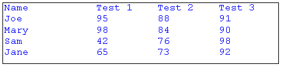

Практическое руководство. Установка позиций табуляции для выводимого текста
Позиции табуляции для текста можно задать путем вызова SetTabStops метод StringFormat объекта и неудачами, StringFormat объект DrawString метод Graphics класса.
Note
System.Windows.Forms.TextRenderer Делает, поддерживают добавление позиций табуляции для отображаемого текста, несмотря на то, что вы можете развернуть существующую вкладку перестает использовать TextFormatFlags.ExpandTabs флаг.
Пример
В следующем примере позициями табуляции в 150, 250 и 350. Затем код отображает список имен и результатов теста с вкладками.
На следующем рисунке показано текста:

Следующий код передаются два аргумента SetTabStops метод. Вторым аргументом является массив, содержащий смещения позиций табуляции. Первый аргумент, переданный SetTabStops равно 0, это означает, что первое смещение в массиве измеряется начиная с позиции 0, левого края ограничивающего прямоугольника.
string text = "Name\tTest 1\tTest 2\tTest 3\n";
text = text + "Joe\t95\t88\t91\n";
text = text + "Mary\t98\t84\t90\n";
text = text + "Sam\t42\t76\t98\n";
text = text + "Jane\t65\t73\t92\n";
FontFamily fontFamily = new FontFamily("Courier New");
Font font = new Font(
fontFamily,
12,
FontStyle.Regular,
GraphicsUnit.Point);
Rectangle rect = new Rectangle(10, 10, 450, 100);
StringFormat stringFormat = new StringFormat();
SolidBrush solidBrush = new SolidBrush(Color.FromArgb(255, 0, 0, 255));
float[] tabs = { 150, 100, 100, 100 };
stringFormat.SetTabStops(0, tabs);
e.Graphics.DrawString(text, font, solidBrush, rect, stringFormat);
Pen pen = Pens.Black;
e.Graphics.DrawRectangle(pen, rect);
Компиляция кода
- Предыдущий пример предназначен для работы с Windows Forms и требует PaintEventArgs
e, который является параметром PaintEventHandler.